Introduction
EmotionCam is a Windows desktop app for one person using a laptop webcam. It processes frames locally by default, shows smoothed visible-expression estimates, supports personalized calibration, can run in the Windows tray, saves optional metadata-only logs, shows local Statistics, and can optionally use AI after explicit consent. AI providers include Local Ollama on your own computer and OpenAI cloud analysis.
Privacy and Safety
- No identity recognition, face matching, accounts, telemetry, or automatic recording.
- Normal use does not save images or video.
- AI is off by default and cannot send images unless enabled with consent.
- Local Ollama mode sends selected images only to Ollama running on this computer and needs no OpenAI key or quota.
- OpenAI mode sends selected images to OpenAI and needs an API key, quota, and internet access.
- Cropped-face-only sending is on by default for AI mode.
- API keys are never stored in config JSON or logs.
- Daily email summaries are off by default and send text only if explicitly enabled.
Installation and Releases
- Download
EmotionCam_Setup.exefor v1.0.0 local-only orEmotionCam_Setup_v1.2.0_AI.exefor v1.2.0-ai from GitHub Releases. - Run the installer and launch from Start Menu or desktop shortcut.
- Allow Windows camera access for desktop apps.
Choose v1.0.0 for maximum offline/privacy use with no AI-provider option. Choose v1.2.0-ai for the same local app plus optional Local Ollama or OpenAI AI analysis.
From source: create a Python 3.11/3.12 virtual environment, install requirements.txt, then run python -m app.main.
First Launch
The startup screen shows privacy and approximation notices, the metadata-history choice, Start Camera, Settings, and Exit.

Main Dashboard
The dashboard contains the camera preview, colored face rectangle, current likely expression, group, confidence, message, timeline, detection mode, profile status, External AI status, Statistics, Settings, Open Logs, Run in background, and Exit controls.
Blue means positive, orange means negative, and gray means neutral/unknown/no face.

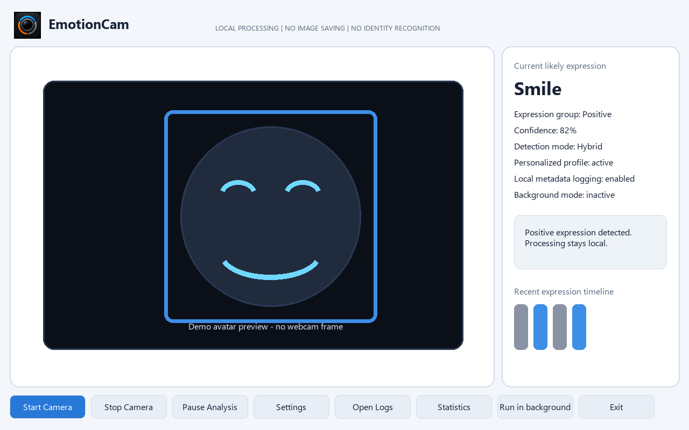
Camera Controls
- Click Start Camera.
- Use Pause Analysis to keep preview while classification pauses.
- Click Stop Camera to release the webcam and show the black
Camera stoppedscreen.
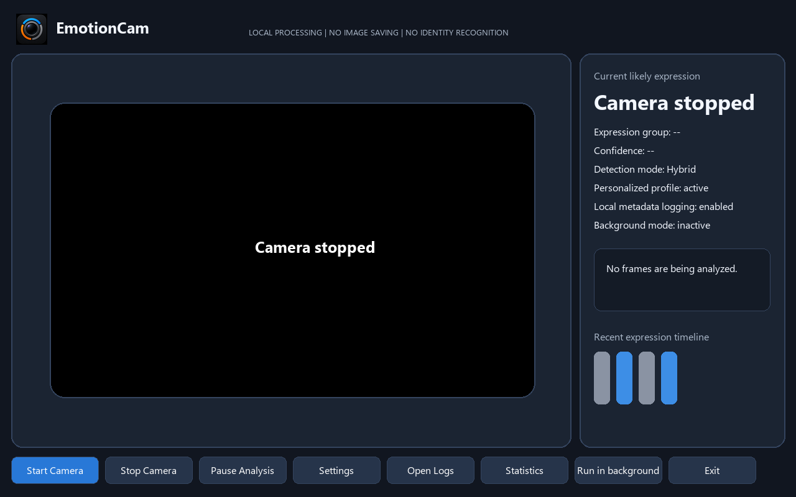
Expression Detection
Positive labels include happy, smile, smile_small, smile_big, laughing, amused, and surprised. Negative labels include sad, angry, fearful, disgusted, tired, bored, frustrated, and concerned. Neutral-group labels include neutral, focused, confused, skeptical, thinking, relaxed, unknown, low_confidence, and no_face.
Detection modes include Local only, Personalized only, Personalized / Hybrid local, AI only, and Hybrid local + AI.
AI Analysis: Local Ollama or OpenAI
The AI-enabled release can use one selected image at a controlled interval to help estimate visible expressions. AI is disabled by default and requires explicit consent.
| Provider | Where it runs | Key needed | Privacy note |
|---|---|---|---|
| Local Ollama | On your computer at http://localhost:11434 | No OpenAI key | Sends selected images only to local Ollama |
| OpenAI | OpenAI cloud API | OpenAI API key and quota | Sends selected images to OpenAI |
For Local Ollama, install Ollama separately and run ollama pull llava:7b, then choose provider Local Ollama, keep endpoint http://localhost:11434, click Test Connection, enable AI Analysis, accept consent, and choose Hybrid local + AI.
For OpenAI, choose provider OpenAI, enter a valid API key with quota, click Test Connection, enable AI Analysis, accept consent, and choose Hybrid local + AI.
Logs never include images, base64 data, or API keys.
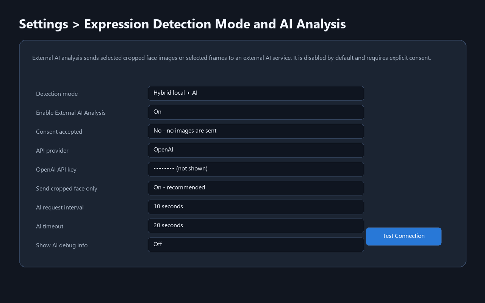
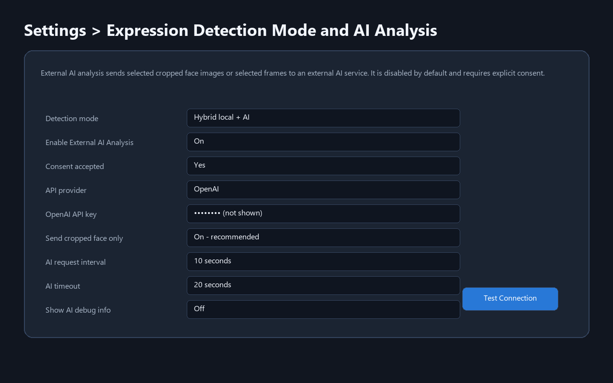
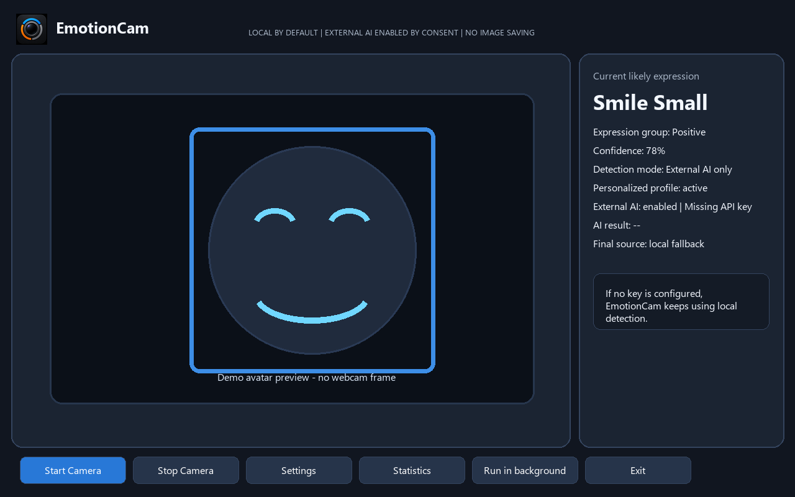
Personalized Calibration
Open calibration from the dashboard or Settings. Choose a target directly from the dropdown, use the local example graphic and match helper, then use Previous, Start Capture, Re-capture, Next, and Finish.

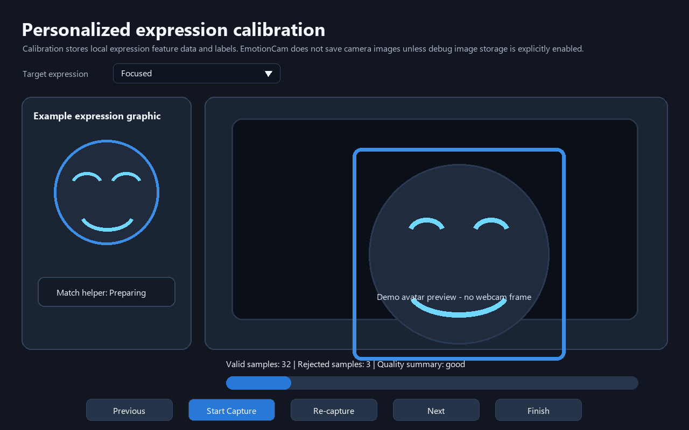
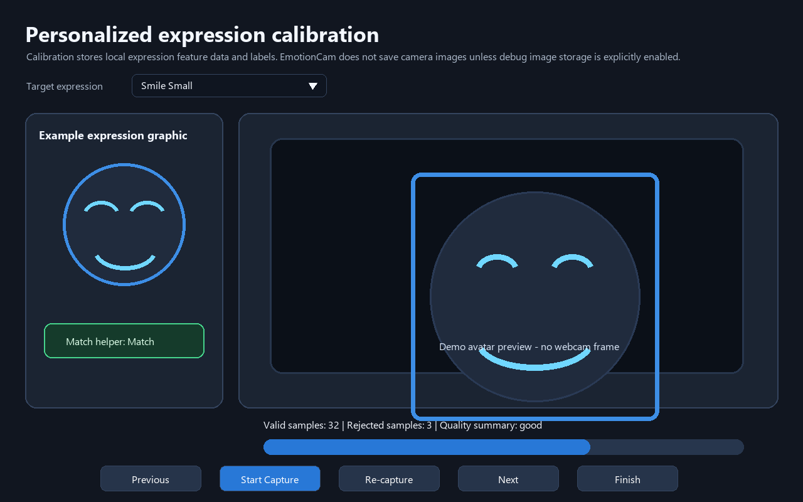
Settings, Themes, and Spinner Arrows
Choose Appearance > Theme > Dark/Light and Save. Numeric inputs can be typed or changed with visible up/down arrows. The AI Analysis section contains enable/disable, consent, provider, OpenAI API key fields, Local Ollama endpoint/model fields, Test Connection, cropped-face-only, interval, timeout, and AI debug controls.
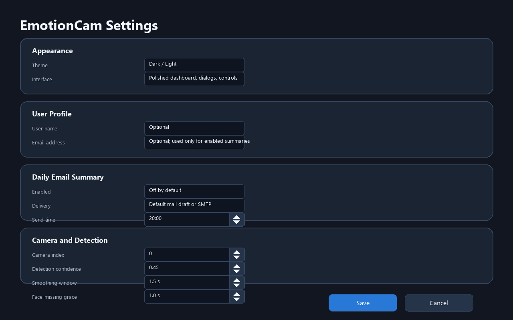
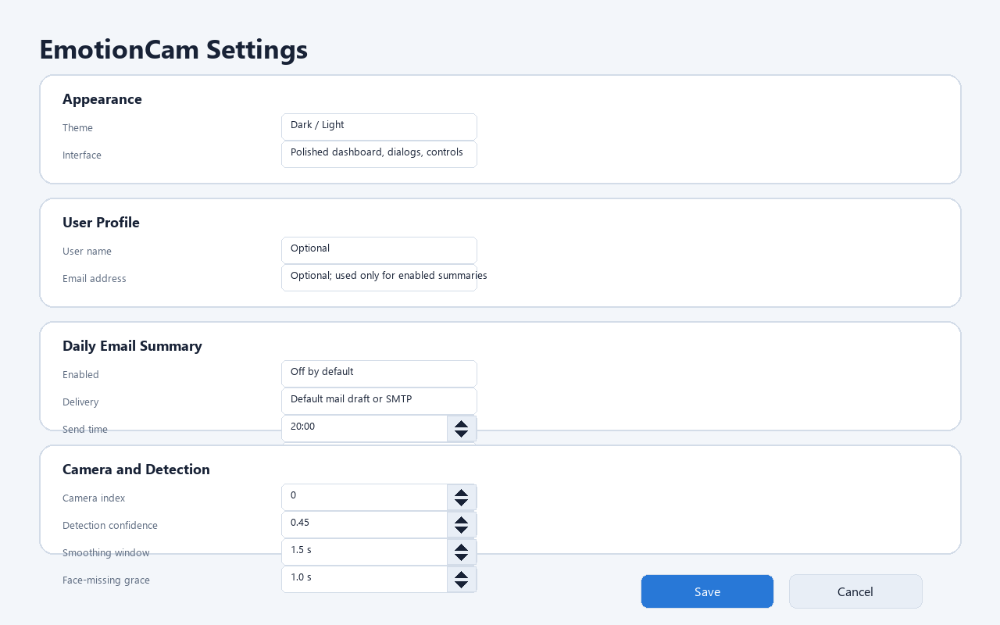


Local Statistics
Click Statistics to view selected-day balance, daily group timeline, expression counts, last-7-days balance, most frequent expression, analyzed time estimate, and positive/serious periods. Charts use local metadata logs only.


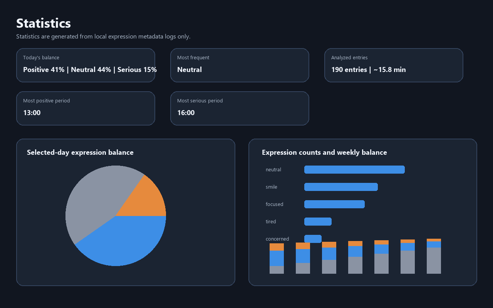
User Profile and Optional Daily Email
User name and email are optional. Daily email summaries are disabled by default and send local statistics text only. SMTP passwords are not stored in profile JSON and use secure credential storage when available.


Background Mode, Logs, and Local Data
Run in background keeps analysis active in the tray. If AI is enabled, it still respects consent, provider readiness, cropped-face-only mode, and rate limits. Logs are metadata-only and stored under %LOCALAPPDATA%\EmotionCam\logs. AI provider/status fields may be logged, but images/base64/API keys are never logged.

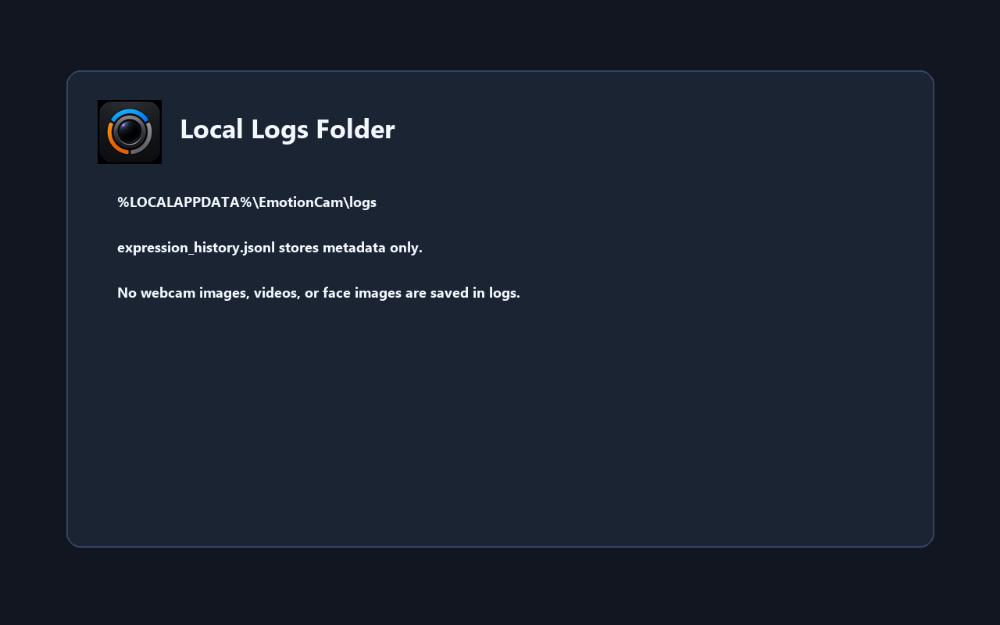
Demo Walkthrough
- Launch and show the icon/startup screen.
- Start camera; show positive blue rectangle.
- Stop camera; show Camera stopped.
- Open Settings; show arrows and themes.
- Show AI off by default, choose Local Ollama, explain
ollama pull llava:7b, then optionally show OpenAI as the cloud/key/quota option. Do not display a real API key. - Open calibration; show dropdown, graphic, match helper, capture, recapture, navigation, and finish.
- Open Statistics, User Profile, Email Summary, Background, Logs, and Exit.
Troubleshooting and Limitations
| Issue | Try |
|---|---|
| Camera unavailable | Close other webcam apps and allow desktop camera access. |
| Poor detection/calibration | Improve lighting, face the camera, hold still, and calibrate. |
| Local Ollama cannot connect | Install/start Ollama, keep endpoint http://localhost:11434, and use Test Connection. |
| Local Ollama model missing | Run ollama pull llava:7b, or enter the exact model you installed. |
| OpenAI missing key/quota | Enter a funded API key or use Local Ollama instead. |
| AI timeout/error | Check provider setup, model availability, timeout settings, and local fallback. |
| No Statistics data | Enable logging, run analysis, refresh, and select a date with entries. |
Estimates remain approximate; calibration and AI can improve results but cannot guarantee accuracy.
Uninstall and Data Removal
Uninstall from Windows Installed apps. Fully exit EmotionCam and delete %LOCALAPPDATA%\EmotionCam to remove settings, logs, profiles, and optional debug frames.